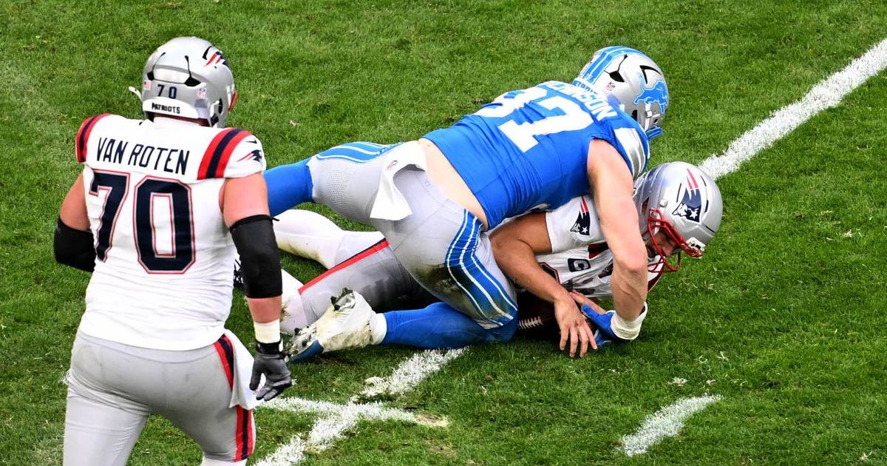

Drake Maye leaves Munich game with an ankle injury — and Hutchinson hurt his knee on the same play
One sack on the opening drive in Munich cost both teams a star: Drake Maye left with an ankle injury and never returned, and Aidan Hutchinson hurt his knee celebrating the play. New England lost 35-10 to Detroit.

Disclosure: this post contains affiliate links. I earn a commission on qualifying purchases.
The play
Five and a half minutes into Sunday's game in Munich, the Patriots lost their quarterback — and the Lions lost their best pass rusher on the very same snap.
On third-and-goal on New England's opening drive, Aidan Hutchinson beat tackle Will Campbell, caught Drake Maye from behind, and dragged him down. Maye's right ankle appeared to get caught underneath Hutchinson's body as he went to the turf. Maye was doubled over on the sideline after the play while the Patriots kicked a field goal, then walked gingerly to the locker room. He never returned, and New England ruled him out with about six minutes left in the first half.
Before the injury, Maye had completed 3 of 4 passes for 48 yards on the drive and added an 11-yard scramble. The Patriots managed just 151 total yards the rest of the way in a 35-10 loss to Detroit, while the Lions racked up 494.
The other half of the play
Hutchinson never got to enjoy the sack. He leapt in the air to celebrate, and when he landed his knee seemed to buckle — he recoiled immediately, collapsed, and grabbed his right knee before heading to the locker room for evaluation. Detroit ruled him out in the third quarter, while leading 28-3. A person with knowledge of the situation later told the Associated Press that Hutchinson suffered a season-ending knee injury.
No flag was thrown on the play. Fox rules analyst Mike Pereira said Hutchinson was not guilty of a hip-drop tackle, and Patriots coach Mike Vrabel said he did not consider the sack improper. "I'm not going to assume there was something there," Vrabel said. "However it happened, I don't think it was anything intentional. I'm sure that it wasn't. That's part of the game."
What Vrabel said
Vrabel had little to add on Maye's prognosis after the game. "Obviously wasn't able to finish the game, so we'll have to get some more tests run," he said at his postgame news conference, adding that the team would see "when we come back what it ends up being and the severity of whatever injury he has." He called it "a low leg injury," and said Maye "couldn't play, couldn't run, couldn't do whatever he needed to do to play quarterback, to protect himself, to execute, or function at that level."
That is all that is known for now. There is no official diagnosis beyond the ankle injury, and no timeline.
Life without the QB1
Losing Maye — the 2025 MVP runner-up, who had not missed a start since becoming New England's starter in Week 6 of the 2024 season — flattened the Patriots' offense. Backup Tommy DeVito completed 12 of 24 passes for 81 yards with one touchdown and one interception, and the drop-off was immediate: before halftime he went 4 of 9 for 16 yards with a pick, the Patriots punted on four straight drives, and the offense totaled 29 yards on 20 plays with him at quarterback. Thirty of those yards came on a defensive pass interference penalty — without it, the total was minus-1. New England managed 91 yards of offense after Maye's injury.
DeVito did at least get the Patriots into the end zone early in the fourth quarter, finishing a 13-play, 87-yard drive with a 10-yard touchdown pass to Lan Larison for the rookie's first NFL score. "We never got to establish who we were," DeVito said afterward. "Kind of felt like we were playing on their terms, and I think that's just not our style of football."
DeVito became Maye's primary backup this year after the Patriots claimed him off waivers before the 2025 season and signed him to a two-year, $7.4 million deal in March. He had not taken a snap in 2025 and had thrown eight passes in two brief appearances this season before Sunday.
The loss drops New England to 5-5, with back-to-back defeats and three losses in its last four. The timing at least offers some breathing room: the Patriots head into their bye week, then visit the Los Angeles Chargers on Nov. 29 in Week 12.
Watch
Source: The Lions' Huge Win Comes With A Massive Aidan Hutchinson Concern (A to Z Sports Detroit on YouTube). Mike Payton breaks down Detroit's 35-10 win in Munich, the latest on Hutchinson's injury, and why the Lions' defensive line kept dominating after he left the game.
Gear up: Fanatics